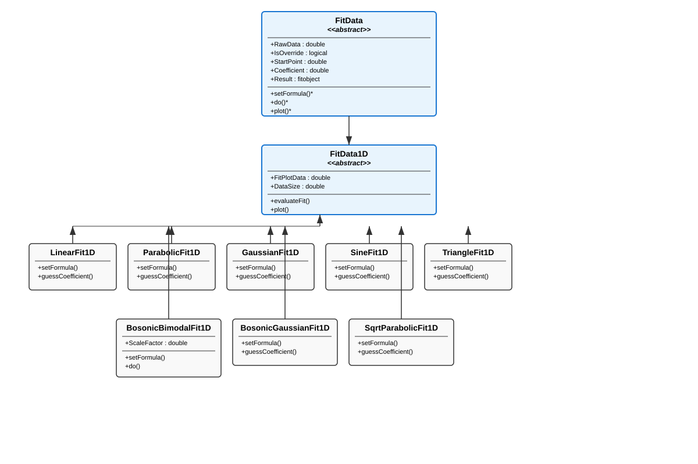
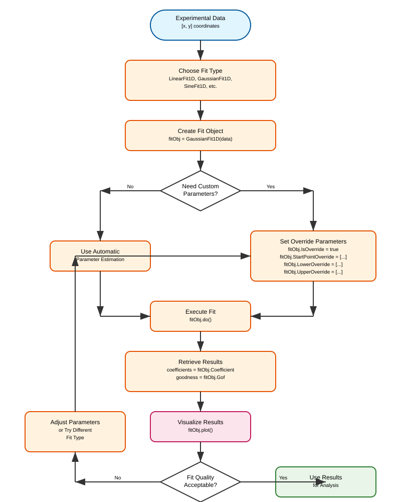
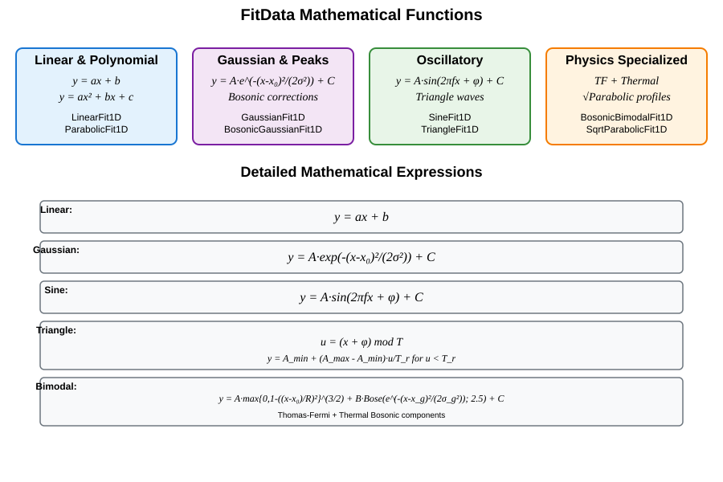

Fit Curves or Surfaces Using FitData#
The FitData framework provides a comprehensive object-oriented approach to fitting mathematical functions to experimental data in MATLAB. Built on top of MATLAB’s Curve Fitting Toolbox, it offers automatic parameter estimation, customizable bounds, and robust optimization settings for a wide variety of common fitting scenarios in atomic, molecular, and optical (AMO) physics.
Overview#
The FitData system follows a hierarchical design pattern where abstract base classes define the common interface and concrete implementations handle specific mathematical functions. The framework supports:
Automatic parameter estimation from data characteristics
Customizable fit bounds and starting points
Robust optimization settings with configurable tolerances
Built-in plotting capabilities for visualization
Extensible architecture for adding new fit functions
The class hierarchy is shown in the following diagram:
{kind=link}

Basic Usage Workflow#
The typical workflow for using FitData follows these steps:
{kind=link}

Core Classes#
FitData (Abstract Base)#
The FitData abstract base class provides the foundation for all fitting operations. It handles:
Data validation and preprocessing
Parameter management with automatic guessing and override capabilities
Optimization settings (tolerance, maximum iterations, function evaluations)
Result storage and access methods
Key Properties:
RawData: Input experimental dataIsOverride: Flag to enable parameter overridesStartPointOverride,LowerOverride,UpperOverride: Custom parameter boundsCoefficient: Fitted coefficients afterdo()is calledResult: MATLAB fitobject containing full fit resultsGof: Goodness of fit statistics
FitData1D (Abstract Base)#
The FitData1D class extends FitData for one-dimensional curve fitting. It adds:
Standardized data format validation (n×2 matrix of [x,y] coordinates)
Plotting capabilities with automatic curve generation
Fit evaluation at arbitrary x-coordinates via
evaluateFit()
Key Methods:
plot(): Visualize raw data and fitted curveevaluateFit(x)(): Evaluate fitted function at specified x valuesdo(): Execute the fitting procedure
Available Fit Types#
The FitData framework provides implementations for a wide variety of mathematical functions commonly encountered in experimental physics:
{kind=link}

Linear and Polynomial Fits#
LinearFit1D
Fits linear functions of the form \(y = ax + b\).
% Example: Linear fit to noisy data
x = linspace(0, 10, 50);
y = 2*x + 1 + 0.1*randn(size(x));
data = [x', y'];
linearFit = LinearFit1D(data);
linearFit.do();
linearFit.plot();
% Access results
slope = linearFit.Coefficient(1); % coefficient 'a'
intercept = linearFit.Coefficient(2); % coefficient 'b'
ParabolicFit1D
Fits parabolic functions of the form \(y = ax^2 + bx + c\).
% Example: Parabolic fit
x = linspace(-5, 5, 100);
y = 0.5*x.^2 + 2*x + 1 + 0.1*randn(size(x));
data = [x', y'];
parabolicFit = ParabolicFit1D(data);
parabolicFit.do();
parabolicFit.plot();
Gaussian and Peak Fits#
GaussianFit1D
Fits Gaussian functions of the form \(y = A e^{-(x-x_0)^2/(2\sigma^2)} + C\).
Coefficients: - \(A\): amplitude - \(x_0\): center position - \(\sigma\): width parameter - \(C\): baseline offset
% Example: Gaussian fit to experimental peak
x = linspace(-5, 5, 200);
y = 2*exp(-(x-1).^2/0.5) + 0.1 + 0.05*randn(size(x));
data = [x', y'];
gaussianFit = GaussianFit1D(data);
gaussianFit.do();
gaussianFit.plot();
% Extract physical parameters
amplitude = gaussianFit.Coefficient(1);
center = gaussianFit.Coefficient(2);
sigma = gaussianFit.Coefficient(3);
offset = gaussianFit.Coefficient(4);
% Calculate FWHM
fwhm = 2*sqrt(2*log(2))*sigma;
Oscillatory Fits#
SineFit1D
Fits sinusoidal functions of the form \(y = A \sin(2\pi f x + \phi) + C\).
Coefficients: - \(A\): amplitude - \(f\): frequency - \(\phi\): phase - \(C\): offset
% Example: Sine wave fit with automatic frequency estimation
x = linspace(0, 10, 200);
y = 2*sin(2*pi*0.5*x + pi/4) + 1 + 0.1*randn(size(x));
data = [x', y'];
sineFit = SineFit1D(data);
sineFit.do();
sineFit.plot();
% Access oscillation parameters
amplitude = sineFit.Coefficient(1);
frequency = sineFit.Coefficient(2);
phase = sineFit.Coefficient(3);
offset = sineFit.Coefficient(4);
TriangleFit1D
Fits triangle wave functions with customizable rise and fall times.
Formula:
\(u = (x + \phi) \bmod T\)
\(y(u) = \begin{cases} A_{\min} + (A_{\max} - A_{\min})\, \dfrac{u}{T_r}, & 0 \le u < T_r \\ A_{\max} - (A_{\max} - A_{\min})\, \dfrac{u - T_r}{T - T_r}, & T_r \le u < T \end{cases}\)
Coefficients: - \(A_{\max}\), \(A_{\min}\): maximum and minimum amplitudes - \(\phi\): phase offset - \(T\): period - \(T_r\): rise time
% Example: Triangle wave fit
x = linspace(0, 20, 200);
y = sawtooth(2*pi*0.2*x, 0.5) + 0.1*randn(size(x));
data = [x', y'];
triangleFit = TriangleFit1D(data);
triangleFit.do();
triangleFit.plot();
Specialized Physics Fits#
BosonicBimodalFit1D
Fits atomic density profiles with both Thomas-Fermi (condensate) and thermal (bosonic) components. This is particularly useful for analyzing Bose-Einstein condensate experiments.
Formula:
\(y = A\,\max\{0,1-((x-x_0)/R)^2\}^{3/2} + B\,\mathrm{Bose}(e^{-(x-x_g)^2/(2\sigma_g^2)};2.5) + C\)
Coefficients: - Thomas-Fermi: \(A\) (amplitude), \(x_0\) (center), \(R\) (radius) - Thermal: \(B\) (amplitude), \(x_g\) (center), \(\sigma_g\) (width) - \(C\): baseline offset
% Example: Bimodal fit for BEC analysis
x = linspace(-5, 5, 201)';
% Simulate TF + thermal components
tf_component = 1.5 * max(0, 1 - ((x-0.2)/1.2).^2).^(3/2);
thermal_component = 0.6 * boseFunctionApprox(exp(-(x+0.4).^2/(2*0.8^2)), 2.5);
y = tf_component + thermal_component + 0.05;
data = [x, y];
fitObj = BosonicBimodalFit1D(data);
fitObj.do();
fitObj.plot();
% Extract condensate and thermal parameters
tf_amplitude = fitObj.Coefficient(1);
tf_center = fitObj.Coefficient(2);
tf_radius = fitObj.Coefficient(3);
thermal_amplitude = fitObj.Coefficient(4);
BosonicGaussianFit1D
Fits thermal atomic distributions using bosonic statistics corrections.
SqrtParabolicFit1D
Fits square-root parabolic profiles, often used for Thomas-Fermi distributions in trapped atomic gases.
Advanced Usage#
Parameter Override System#
For challenging fits or when automatic parameter estimation fails, you can override the initial guesses and bounds:
% Example: Custom parameter override
fitObj = GaussianFit1D(data);
% Enable override mode
fitObj.IsOverride = true;
% Set custom starting points [amplitude, center, sigma, offset]
fitObj.StartPointOverride = [2.0, 1.0, 0.5, 0.1];
% Set custom bounds
fitObj.LowerOverride = [0, -2, 0.1, 0];
fitObj.UpperOverride = [5, 3, 2, 1];
% Execute fit with custom parameters
fitObj.do();
fitObj.plot();
You can also use convenience methods:
% Set default overrides based on current automatic estimates
fitObj.setDefaultOverride();
% Clear all overrides and return to automatic mode
fitObj.clearOverride();
Optimization Settings#
Fine-tune the optimization process for difficult fits:
fitObj = SineFit1D(data);
% Adjust optimization tolerances
fitObj.TolFun = 1e-12; % Function tolerance
fitObj.MaxFunEvals = 5000; % Maximum function evaluations
fitObj.MaxIter = 3000; % Maximum iterations
fitObj.do();
Batch Processing#
Process multiple datasets efficiently:
% Example: Fit multiple Gaussian peaks
datasets = {data1, data2, data3, data4}; % Cell array of [x,y] data
fits = cell(size(datasets));
for i = 1:length(datasets)
fits{i} = GaussianFit1D(datasets{i});
fits{i}.do();
end
% Extract all amplitudes
amplitudes = cellfun(@(fit) fit.Coefficient(1), fits);
% Plot all fits
figure;
for i = 1:length(fits)
subplot(2,2,i);
fits{i}.plot(gca, true);
title(sprintf('Dataset %d', i));
end
Integration with Experimental Workflows#
The FitData framework integrates seamlessly with the broader MuscleMuseum experimental ecosystem:
BEC Experiment Analysis#
In BEC experiments, density fitting is automatically handled by the DensityFit class:
% Example integration with BecExp
becExp = BecExp("MyExperiment", "ConfigName");
becExp.run(); % Collect experimental data
% Automatic density fitting
densityFit = DensityFit(becExp);
densityFit.FitMethod = "GaussianFit1D"; % or "BosonicGaussianFit1D"
densityFit.buildFit(1:10); % Fit runs 1-10
% Access fit results for all runs
xSizes = densityFit.getSigmaX();
ySizes = densityFit.getSigmaY();
Custom Fit Development#
To create new fit types, inherit from FitData1D and implement the required abstract methods:
classdef MyCustomFit1D < FitData1D
methods
function obj = MyCustomFit1D(rawData)
obj@FitData1D(rawData);
end
function setFormula(obj)
% Define your custom fit function
obj.Func = fittype('A*exp(-x/tau) + C', ...
'independent', 'x', ...
'coefficients', {'A', 'tau', 'C'});
end
function guessCoefficient(obj)
% Implement parameter estimation logic
x = obj.RawData(:,1);
y = obj.RawData(:,2);
% Your estimation algorithm here
A_guess = max(y) - min(y);
tau_guess = (max(x) - min(x)) / 3;
C_guess = min(y);
obj.StartPoint = [A_guess, tau_guess, C_guess];
obj.Lower = [0, 0, min(y)];
obj.Upper = [2*A_guess, 2*tau_guess, max(y)];
end
end
end
Best Practices#
Data Quality - Ensure sufficient data points (at least 3× the number of fit parameters) - Remove obvious outliers before fitting - Consider data preprocessing (smoothing, baseline correction) for noisy data
Parameter Estimation - Start with automatic parameter estimation before using overrides - Use physical intuition to set reasonable parameter bounds - For oscillatory data, ensure sufficient sampling to resolve the frequency
Fit Validation - Always examine residuals and goodness-of-fit statistics - Use \(R^2\), RMSE, and visual inspection to assess fit quality - Consider alternative fit functions if residuals show systematic patterns
Performance - For batch processing, consider parallel execution with MATLAB’s Parallel Computing Toolbox - Cache fit objects when processing similar datasets repeatedly - Use appropriate optimization tolerances (tighter for critical fits, looser for screening)
Error Handling - Implement try-catch blocks for automated fitting pipelines - Log failed fits for later manual inspection - Consider fallback fit types for robust automated analysis
The FitData framework provides a powerful, extensible foundation for quantitative analysis in AMO physics experiments, combining ease of use with the flexibility needed for specialized applications.